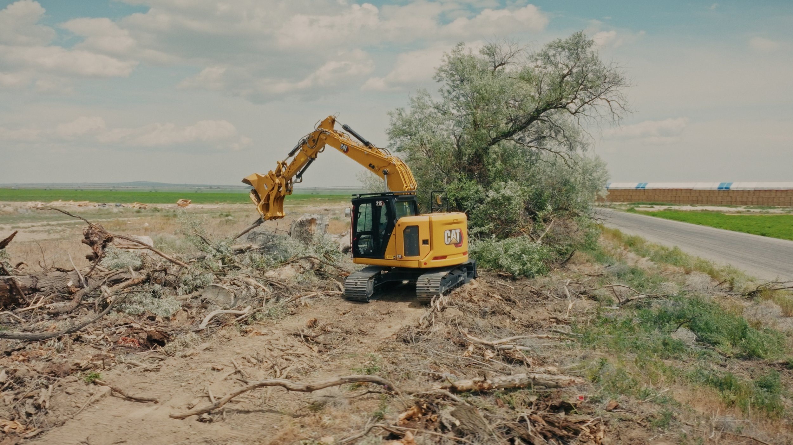
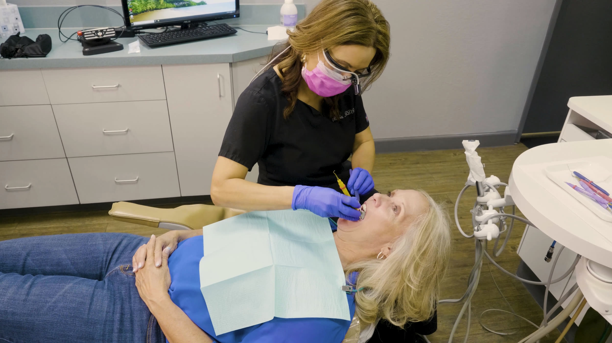
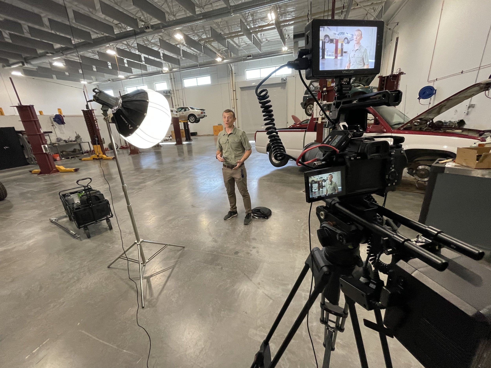

IWE — Day in the Life
One student's actual day, start to finish. The most honest enrollment pitch there is.
Video Production & Photography · Phoenix, AZ
I'm Josh Chappell — a one-man film crew in Phoenix. I film schools, job sites, medical practices, and businesses that don't fit any box, and I'm a little obsessive about making them look as good on screen as they are in person.
Industries We Serve
Films that make a campus feel like home
See examples →
Proof of work, in 4K
See examples →
The first visit, before the first visit
See examples →
The uncategorizable stuff — often the best stuff
See examples →Featured Work
One student's actual day, start to finish. The most honest enrollment pitch there is.
Twenty-four seconds of heavy machinery doing satisfying things. For a land-clearing and fire-mitigation crew.
A veteran gets a donated bath remodel from the Baths For The Brave crew. Trades work with a lot of heart.
A tour of Arrowhead Lakes Dentistry that makes the office feel familiar before your first visit.
NCAA event coverage, shot for broadcast and social at the same time.
A walkthrough of Blandford Homes' Estates at Mandarin Grove — luxury real estate, treated like cinema.
What I Do
Someone lands on your homepage and gives you about eight seconds. A good landing video buys you three minutes. I make the kind that ends with people clicking the button you want clicked.
Nobody opens Instagram hoping to see an ad. So I don't make ads — I make thirty seconds of something worth watching that happens to sell your thing. Cut natively for Reels, TikTok, and YouTube.
A real commercial — concept, script, shoot, edit, color, sound. The polish you'd expect from an agency with a lobby, minus the lobby and the invoice that pays for it.
Most people hate being on camera. My job is to make you forget it's there — good light, clean sound, real conversation. You'll watch it back and think, 'huh, I sound like I know what I'm doing.' You do.
Headshots that don't look like DMV photos. Product, team, and office shots — a library of images so your website, proposals, and posts all feel like the same company.
There's a version of your business that's only visible from 200 feet up at golden hour. FAA Part 107 certified, insured, and slightly addicted to that shot.
Your event took months to plan and was over in a day. The recap keeps working — proof for sponsors, FOMO for next year's crowd, and content for months of posts.
I frame every shoot for horizontal and vertical at once. One day of filming fills your website, your YouTube, and your Reels — no 'can we crop this?' emails.
Client Reviews
“Josh was great to work with on my company's product launch video. From pre-shoot meetings, to coordinating on site at our factory and the studio, to delivering the final product, e…”
“Josh is a fantastic video resource and is a pleasure to work with. He has excellent suggestions and quickly gets a grasp of the vision we have for each project. He's flexible, perf…”
“Josh was an absolute pleasure to work with for the corporate videos we had created for a special event. He went above and beyond with our limited timeframe and was extremely commun…”
“I really enjoyed working with Josh for a client video shoot. He was professional, prepared, and organized. The final videos looked amazing. I would 100% work with him again.”
“Josh is amazing! Talented, thoughtful on details and very creative. We used him at Blandford Homes to shoot our community video and it is one of my favorite videos we have.”
“Josh is exceptional! We've worked with him for years during our Baths for the Brave bath crash. He captures the moment to perfection — I highly recommend!”
Meet Your Videographer
Full-time visual storyteller. FAA Part 107 drone pilot. Chronic early-arriver to shoots. After years of filming for tech companies and schools around Phoenix, I fell hard for the entrepreneurial story — the risk, the craft, the pride people take in what they've built. I show up prepared, deliver on time, and stay on budget. That shouldn't be rare, but here we are.
FAQ
I'm based in Phoenix and work all over the Valley — Scottsdale, Mesa, Tempe, Chandler, Gilbert, Glendale. Further out in Arizona is usually no problem, and I'll travel for the right project. Just ask.
Commercials, website landing videos, social media clips, professional interviews, event recaps, and FAA-licensed drone footage — plus brand photography and headshots. I frame every shoot for horizontal and vertical at the same time, so one shoot covers your website, YouTube, and Instagram.
Honest answer: it depends what we're making. A half-day social shoot and a multi-location commercial are very different animals. Tell me your goals and your budget and I'll build something that fits — no surprise line items, and the number I quote is the number you pay.
We agree on a delivery date before I ever press record, and I hit it. If you've got a hard deadline — an event, a launch, an enrollment season — tell me up front and I'll be straight with you about what's doable.
Yep — FAA Part 107 certified for commercial drone work. The aerial shots are legal, insured, and usually everyone's favorite part of the final cut.
Mostly, and that's kind of the point. The person on your first phone call is the person behind the camera and the person doing the final color pass. Nothing gets lost in a handoff, because there isn't one. When a project genuinely needs more hands, I bring in people I trust.
All the time. Headshots, team photos, events, brand libraries — same eye as the films, one frame at a time. Plenty of clients book a photo day first and come back for video later.
Because people buy from businesses they trust, and nothing builds trust faster than seeing you in action. A good video does the convincing before the first phone call — and one solid shoot can feed your website, your ads, and your social feeds for months.
You bring the business you're proud of. I'll bring the cameras, the plan, and a quote with no asterisks.
Start Your Project